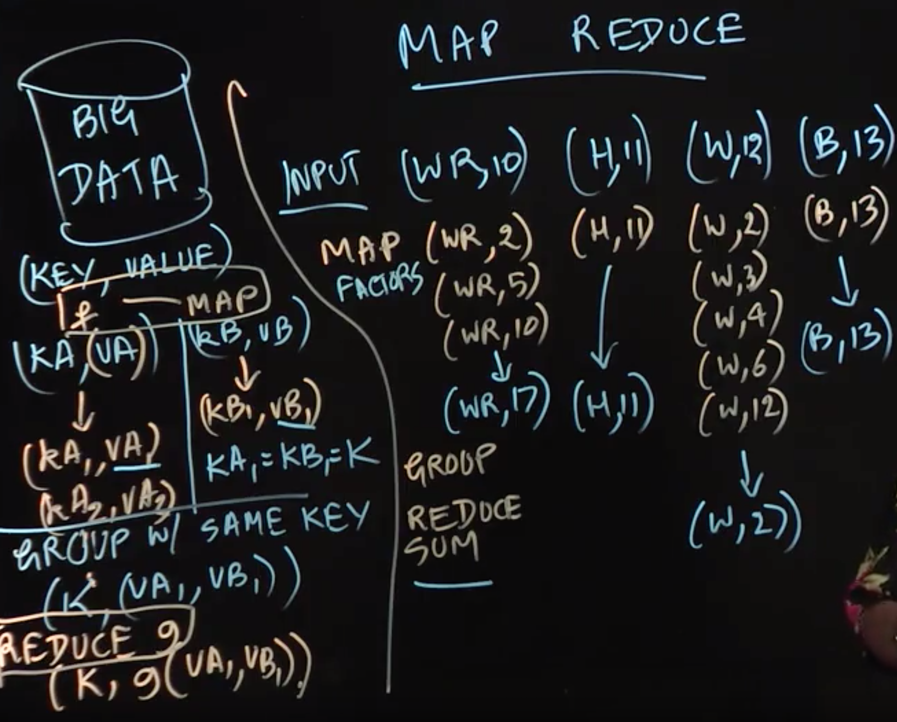

Table of Contents
- Introduction to MapReduce
- Apache Hadoop Project
- Apache Spark Framework
- TF-IDF Example
- Page Rank Example
Introduction to MapReduce
Lecture Summary: In this lecture, we learned the MapReduce paradigm, which is a pattern of parallel functional programming that has been very successful in enabling “big data” computations.
The input to a MapReduce style computation is a set of key-value pairs. The keys are similar to keys used in hash tables, and the functional programming approach requires that both the keys and values be immutable. When a user-specified map function,$f$, is applied on a key-value pair, (kA,vA), it results in a (possibly empty) set of output key-value pairs,
{(kA1,vA1),(kA2,vA2),(kA3,vA3)……} This map function can be applied in parallel on all key-value pairs in the input set, to obtain a set of intermediate key-value pairs that is the union of all the outputs.
The next operation performed in the MapReduce workflow is referred to as grouping, which groups together all intermediate key-value pairs with the same key. Grouping is performed automatically by the MapReduce framework, and need not be specified by the programmer. For example, if there are two intermediate key-value pairs, (kA1,vA1),(kB1,vB1) with the same key, kA1 = kB1 = k, then the output of grouping will associate the set of values {vA1,vB1} with key k.
Finally, when a user-specified reduce function,g, is applied on two or more grouped values {eg., vA1,vB1} associated with the same key k, it folds or reduces all those values to obtain a single output key-value pair, (k,g(vA1,vB1,…)), for each key k, in the intermediate key-value set. If needed, the set of output key-value pairs can then be used as the input for a successive MapReduce computation.
In the example discussed in the lecture, we assumed that the map function, $f$ mapped a key-value pair like (WR,10) to a set of intermediate key-value pairs obained from factors of 10 to obtain the set, {(WR,2),(WR,5),(WR,10)}, and the reduce function,$g$, calculated the sum of all the values with the same key to obtain (WR,17) as the output key-value pair for key “WR”. The same process can be performed in parallel for all keys to obtain the complete output key-value set.

Apache Hadoop Project
Lecture Summary: The Apache Hadoop project is a popular open-source implementation of the Map-Reduce paradigm for distributed computing. A distributed computer can be viewed as a large set of multicore computers connected by a network, such that each computer has multiple processor cores, e.g., P0,P1,P2,P3…. Each individual computer also has some persistent storage (e.g., hard disk, flash memory), thereby making it possible to store and operate on large volumes of data when aggregating the storage available across all the computers in a data center. The main motivation for the Hadoop project is to make it easy to write large-scale parallel programs that operate on this “big data”.
The Hadoop framework allows the programmer to specify map and reduce functions in Java, and takes care of all the details of generating a large number of map tasks and reduce tasks to perform the computation as well as scheduling them across a distributed computer. A key property of the Hadoop framework is that it supports automatic fault-tolerance. Since MapReduce is essentially a functional programming model, if a node in the distributed system fails, the Hadoop scheduler can reschedule the tasks that were executing on that node with the same input elsewhere, and continue computation. This is not possible with non-functional parallelism in general, because when a non-functional task modifies some state, re-executing it may result in a different answer. The ability of the Hadoop framework to process massive volumes of data has also made it a popular target for higher-level query languages that implement SQL-like semantics on top of Hadoop.
Apache Spark Framework
Lecture Summary: Apache Spark is a similar, but more general, programming model than Hadoop MapReduce. Like Hadoop, Spark also works on distributed systems, but a key difference in Spark is that it makes better use of in-memory computing within distributed nodes compared to Hadoop MapReduce. This difference can have a significant impact on the performance of iterative MapReduce algorithms since the use of memory obviates the need to write intermediate results to external storage after each map/reduce step. However, this also implies that the size of data that can be processed in this manner is limited by the total size of memory across all nodes, which is usually much smaller than the size of external storage. (Spark can spill excess data to external storage if needed, but doing so reduces the performance advantage over Hadoop.)
Another major difference between Spark and Hadoop MapReduce, is that the primary data type in Spark is the Resilient Distributed Dataset (RDD), which can be viewed as a generalization of sets of key-value pairs. RDDs enable Spark to support more general operations than map and reduce. Spark supports intermediate operations called Transformations (e.g.,map, filter, join,…..) and terminal operations called Actions (e.g.,reduce,collect,count,……). As in Java streams, intermediate transformations are performed lazily, i.e., their evaluation is postponed to the point when a terminal action needs to be performed.
In the lecture, we saw how the Word Count example can be implemented in Spark using Java APIs. (The Java APIs use the same underlying implementation as Scala APIs, since both APIs can be invoked in the same Java virtual machine instance.) We used the Spark flatMap() method to combine all the words in all the lines in an input file into a single RDD, followed by a mapToPair() Transform method call to emit pairs of the form, (word, 1), which can then be processed by a 𝚛𝚎𝚍𝚞𝚌𝚎𝙱𝚢𝙺𝚎𝚢() operation to obtain the final word counts.
TF-IDF Example
Lecture Summary: In this lecture, we discussed an important statistic used in information retrieval and document mining, called Term Frequency – Inverse Document Frequency (TF-IDF). The motivation for computing TF-IDF statistics is to efficiently identify documents that are most similar to each other within a large corpus.
Assume that we have a set of N document D1,D2,…Dn, and a set of terms TERM1,TERM2,…that can appear in these documents. We can then compute total frequencies $TF_{i,j}$ for each term $TERM_{i}$ in each $document_{j}$. We can also compute the document frequencies $DF_{1}$,$DF_{2}$,…for each term, indicating how many documents contain that particular term, and the inverse document frequencies (IDF): $IDF_{i}$ = N / $DF_{i}$, The motivation for computing inverse document frequencies is to determine which terms are common and which ones are rare, and give higher weights to the rarer terms when searching for similar documents. The weights are computed as:
Using MapReduce, we can compute the $TF_{i,j}$ values by using a MAP operation to find all the occurrences of $TERM_{i}$ in document $D_{j}$ followed by a REDUCE operation to add up all the occurrences of $TERM_{i}$ as key-value pairs of the form, (($d_{j}$, $TERM_{i}$), $TF_{i,j}$) (as in the Word Count example studied earlier). These key-value pairs can also be used to compute $DF_{i}$ values by using a MAP operation to identify all the documents that contain $TERM_{i}$ and a REDUCE operation to count the number of documents that $TERM_{i}$ appears in. The final weights can then be easily computed from the $TF_{i,j})$ and $DF_{i}$ values. Since the TF-IDF computation uses a fixed (not iterative) number of MAP and REDUCE operations, it is a good candidate for both Hadoop and Spark frameworks.

Page Rank Example
Lecture Summary: In this lecture, we discussed the PageRank algorithm as an example of an iterative algorithm that is well suited for the Spark framework. The goal of the algorithm is to determine which web pages are more important by examining links from one page to other pages. In this algorithm, the rank of a page,B, is defined as follows,
where SRC(B) is the set of pages that contain a link to B, while $DEST_COUNT(A)$ is the total number of pages that A links to, Intuitively, the PageRank algorithm works by splitting the weight of a page A, among all of the pages that A links to, Each page that A links to has its own rank increased proportional to A’s own rank. As a result, pages that are linked to from many highly-ranked pages will also be highly ranked.
The motivation to divide the contribution of A in the sum by $DEST_COUNT(A)$ is that if page A links to multiple pages, each of the successors should get a fraction of the contribution from page A Conversely, if a page has many outgoing links, then each successor page gets a relatively smaller weightage, compared to pages that have fewer outgoing links. This is a recursive definition in general, since if (say) page X links to page Y, page Y links to page X, then RANK(X) depends on RANK(Y) and vice versa. Given the recursive nature of the problem, we can use an iterative algorithm to compute all page ranks by repeatedly updating the rank values using the above formula, and stopping when the rank values have converged to some acceptable level of precision.In each iteration, the new value of RANK(B) can be computed by accumulating the contributions from each predecessor page, A. A parallel implementation in Spark can be easily obtained by implementing two steps in an iteration, one for computing the contributions of each page to its successor pages by using the flatMapToPair() method, and the second for computing the current rank of each page by using the reduceByKey() and mapValues() methods.. All the intermediate results between iterations will be kept in main memory, resulting in a much faster execution than a Hadoop version (which would store intermediate results in external storage).
1 | package edu.coursera.distributed; |